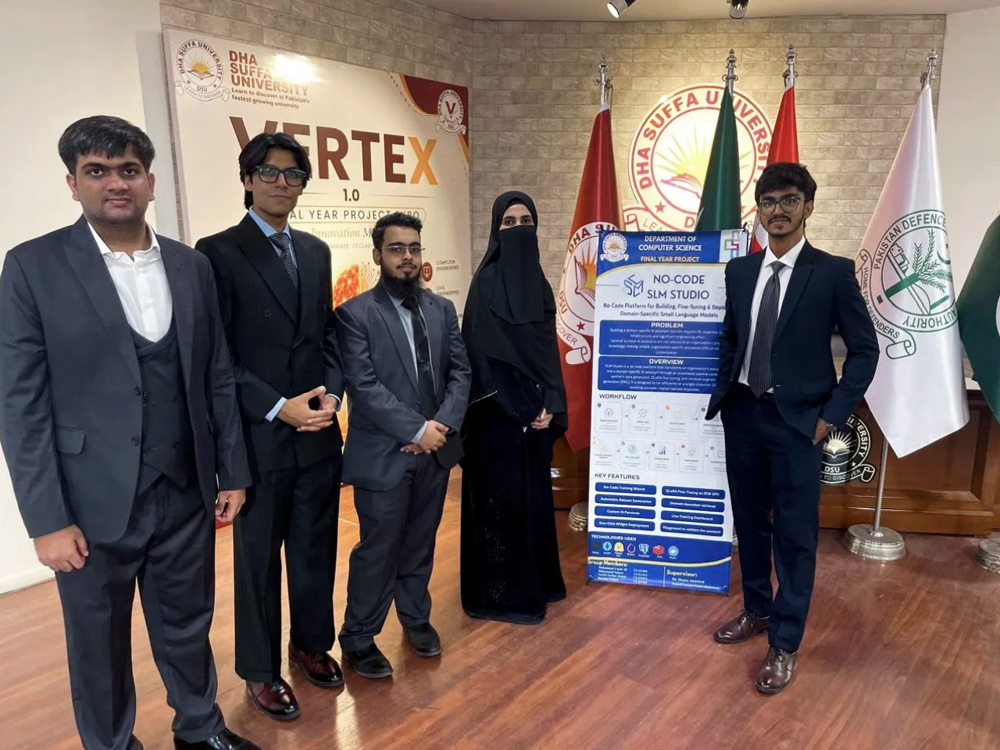

Final-year project · 2025–2026 · I led a team of four
SLM Studio
Your own AI assistant, trained on your own documents, on one desktop GPU.
The problem. Small businesses, clinics and other offices want an AI assistant that knows their documents. Today that usually means pasting the same documents into a hosted chatbot again and again, and it never really learns how they work. SLM Studio lets them train their own: a small model fine-tuned on their documents, so it picks up their tone and the kind of questions they get, with retrieval on top, so they can add new documents later without training again.
My part. I co-owned the ML core with one teammate. I compared FLAN-T5, Qwen and Gemma on our card and we settled on Qwen3-1.7B, Qwen3-4B and Phi-3.5-mini. I built the retrieval, which answers with citations and says This information is not available in the provided document
when the nearest passage is too far away, and the setup that keeps one base model on the GPU and swaps a small adapter for each project.
Not done yet. The numbers here come from one pilot run. We haven't measured answer quality on held-out questions, and writing the training questions still calls an external model.
- UploadPDF, Word, text or CSV
- Chunk & embed~12 s for a 67-chunk document
- Write training Q&A134 pairs from 50 chunks · the only step that leaves the machine
- Fine-tune with QLoRApeak 5.4 GB · 14.2 MB adapter
- Chat or embed a widgetcites its sources, refuses the rest
New documents later? Add them to retrieval. No retraining.
